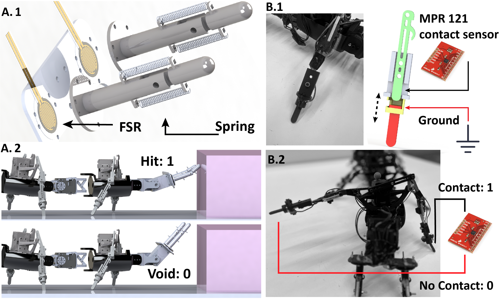
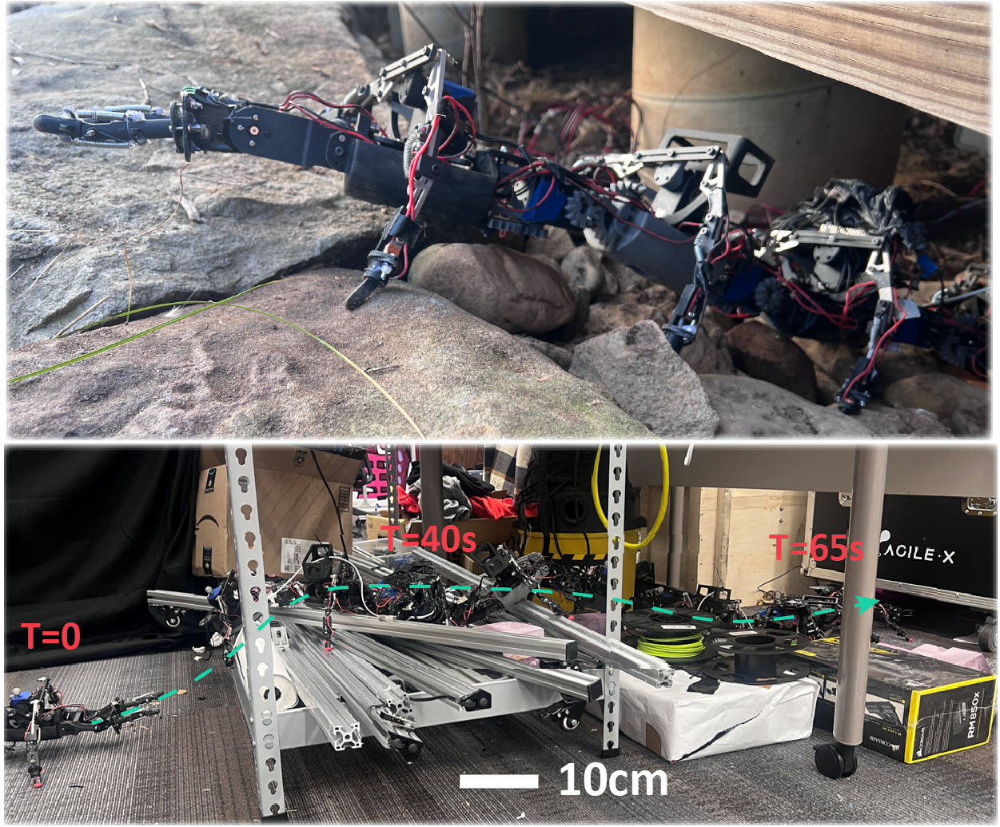

Tactile sensory system design

Robot traverses a pipe.

Many-legged elongated robots show promise for reliable mobility on rugged landscapes. However, most studies on these systems focus on planar motion planning without addressing rapid vertical motion. Despite their success on mild rugged terrains, recent field tests reveal a critical need for 3D behaviors (e.g., climbing or traversing tall obstacles). The challenges of 3D motion planning partially lie in designing sensing and control for a complex high-degree-of-freedom system, typically with over 25 degrees of freedom. To address the first challenge regarding sensing, we propose a tactile antenna system that enables the robot to probe obstacles to gather information about their structure. Building on this sensory input, we develop a control framework that integrates data from the antenna and foot contact sensors to dynamically adjust the robot's vertical body undulation for effective climbing. With the addition of simple, low-bandwidth tactile sensors, a robot with high static stability and redundancy exhibits predictable climbing performance in complex environments using a simple feedback controller. Laboratory and outdoor experiments demonstrate the robot's ability to climb obstacles up to five times its height. Moreover, the robot exhibits robust climbing capabilities on obstacles covered with shifting, robot-sized random items and those characterized by rapidly changing curvatures. These findings demonstrate an alternative solution to perceive the environment and facilitate effective response for legged robots, paving ways towards future highly capable, low-profile many-legged robots.
@article{he2025tactile,
title={Tactile sensing enables vertical obstacle negotiation for elongate many-legged robots},
author={He, Juntao and Chong, Baxi and Iaschi, Massimiliano and Nienhusser, Vincent R and Ha, Sehoon and Goldman, Daniel I},
journal={arXiv preprint arXiv:2504.08615},
year={2025}
}